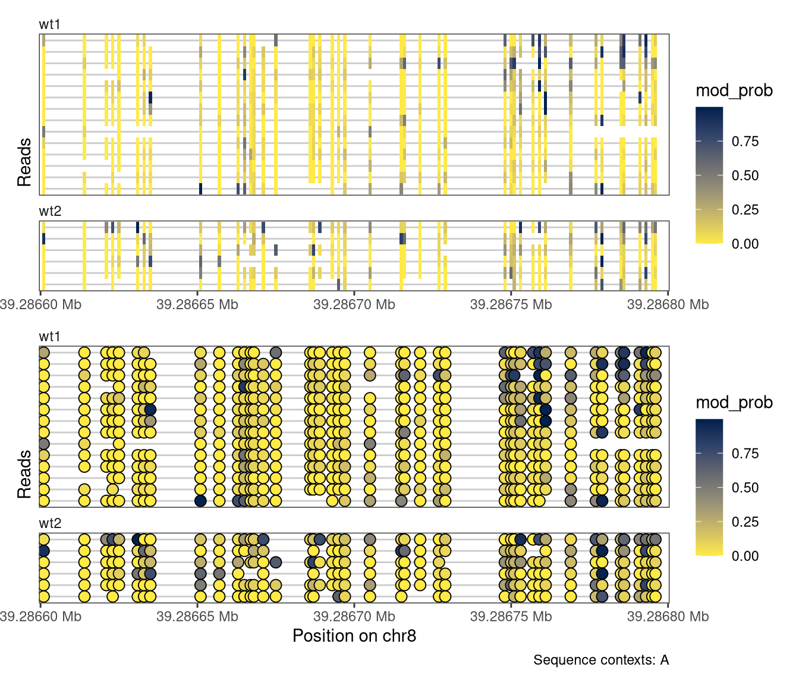

The plotRegion function in footprintR provides a flexible interface for plotting data in a given genomic region. As will be illustrated below, both read-level data, summary-level data (aggregating across all reads overlapping a position) and data from BigWig files can visualized. In addition, predefined regions can be highlighted with background color in any track, and gene models or any other genomic region indicators can be added.
Generally, plotRegion builds up a plot as a combination of individual tracks, of different types (representing the different data types mentioned above). To add a track to a plot, at least the corresponding trackType and trackData arguments must be specified. A list of the supported track types is available in the documentation of plotRegion (see the tracks argument). The order and content of the tracks are fully customizable by the user.
4.1 Preparation
We start by loading the required packages. In addition to the software package, we load a BSgenome and TxDb object providing the mouse genome sequence and transcript annotation.
To exemplify the plotting capabilities of plotRegion, we use modBam files from two wild-type samples, for which 6mA modification calling has been performed. We use the readModBam function to read data from an 800-bp region on chromosome 8 and store it in a SummarizedExperiment object. For more information about reading data with footprintR, see Chapter 2.
Show/hide code
# Read data se <-readModBam(bamfiles =c(wt1 ="data/mESC_wt_6mA_rep1.bam",wt2 ="data/mESC_wt_6mA_rep2.bam"),modbase ="a", regions ="chr8:39286301-39287100", seqinfo =seqinfo(gnm), sequenceContextWidth =1, sequenceReference = gnm)
4.3 Read-level plots
Read-level plots can be generated using either the Heatmap or the Lollipop track type, assuming that there is at least one assay with read-level data present in the provided SummarizedExperiment object. The heatmap visualizes each base with a modification call as a filled rectangle, with optional interpolation between observations. The lollipop plot visualizes each base with a modification call as a filled circle. In both cases, the fill color represents the recorded modification probability of the base. For the read-level plot tracks, the trackData argument specifies the name of the (read-level) assay that should be displayed.
Show/hide code
plotRegion( se, region ="chr8:39286600-39286800", tracks =list(list(trackType ="Heatmap", trackData ="mod_prob"),list(trackType ="Lollipop", trackData ="mod_prob") ))
Figure 4.1
In the current plot, reads on both strands are visualized, and can be distinguished based on the position of the modified bases (the As). It is possible to visualize only the reads on one strand, by providing a stranded region to plotRegion.
Show/hide code
plotRegion( se, region ="chr8:39286600-39286800:+", tracks =list(list(trackType ="Heatmap", trackData ="mod_prob"),list(trackType ="Lollipop", trackData ="mod_prob") ))
Figure 4.2
Moreover, we can limit the display to only positions where the annotated genome has a given sequence (here, an A). This is often helpful to minimize the impact of base calling errors.
Show/hide code
plotRegion( se, region ="chr8:39286600-39286800:+", tracks =list(list(trackType ="Heatmap", trackData ="mod_prob"),list(trackType ="Lollipop", trackData ="mod_prob") ), sequenceContext ="A")

Figure 4.3
Each plot function comes with a set of arguments that can be used to control the way that data is displayed in the track (see the documentation of plotRegion for the full list). For example, we can add interpolation to our heatmap, disable the automatic clustering of the reads, and add custom track and legend titles. For the lollipop plot, we can similarly change the size of the circles and the linewidth of the circle outline.
Additional customization options for read-level plots include the possibility to change the color scheme, set the order of the reads, and restricting the set of visualized reads to those that cover a certain fraction of the plot region. Below, we use a ‘inferno’ color scale for the heatmap, and a gradient from white to blue for the lollipop plot. In addition, we order the reads by the average modification fraction across the region (orderReads = "regionAvg"), and exclude any reads that don’t cover at least 95% of the plotted region (minCoveredFraction = 0.95).
In the plot above, the reads were ordered by the average signal across the entire plotted region. It is also possible to order (or cluster) reads based on the signal in a smaller region, by specifying the orderRegion argument. As an example, we order the reads by the average signal across only the last 20 nucleotides of the plotted region.
The read-level plots will display all reads overlapping the displayed region. In cases where there are too many reads to display, we recommend subsetting the SummarizedExperiment object before calling plotRegion. This can be done conveniently using subsetReads, which allows you to subset the object keeping either a pre-specified set of reads or a random subset. Here, we illustrate this workflow by subsetting the object to five randomly selected reads per sample before calling plotRegion.
Show/hide code
# First subset the object to the plotted region and remove reads not # overlapping that region, to restrict the random sampling to reads # overlapping the plot regionsesub <-filterPositions(se, regions ="chr8:39286600-39286800", filters ="regions")# Sample five random reads for each sampleset.seed(42L)sesub <-subsetReads(sesub, randomSubset =5)plotRegion( sesub, region ="chr8:39286600-39286800",minCoveredFraction =0.95,tracks =list(list(trackType ="Heatmap", trackData ="mod_prob", interpolate =TRUE, orderReads ="regionAvg", orderRegion =as("chr8:39286780-39286800", "GRanges"), orderReverse =FALSE, trackTitle ="Heatmap",legendTitle ="6mA", fillColors ="-inferno"),list(trackType ="Lollipop", trackData ="mod_prob",orderReads ="regionAvg", orderRegion =as("chr8:39286780-39286800", "GRanges"), orderReverse =FALSE, trackTitle ="Lollipop",legendTitle ="6mA", size =2, stroke =0.1, fillColors =c("white", "blue")) ), sequenceContext ="A")
Figure 4.8
By default, read-level tracks are facetted by sample (the columns of se). We can facet by an arbitrary column of colData(se) by changing the value of the facetBy argument for the track, or set the argument to NULL to disable the facetting and show reads from all samples together.
By default, the x-axis of the plots represent genomic coordinates. In some cases (especially if the modified bases are unevenly distributed), the plot may be easier to read if only the modified bases are displayed, evenly spaced along the x-axis. This can be achieved by setting modbaseSpace = TRUE in plotRegion.
Another alternative is to anchor the x-axis at a given genomic position, and display the coordinates as distances from this anchor point. This is achieved by setting the referenceCoordinate argument to the numeric position that should be used as the anchor. Note how the x-axis title changes to reflect the current coordinate system.
As plotRegion returns a patchwork/ggplot2 object, even finer control over the plot components is possible. For example, you may want to change the number of ticks on the x axis, which is controlled by ggplot2’s scale_x_continuous(). Changing the x axis scale will throw a warning because by adding the scale_x_continuous(), you are replacing the existing default x axis scale.
Note that if you are plotting multiple tracks with plotRegion, you need to add scale_x_continuous() using the * or & operator from the patchwork package, instead of ggplot2’s usual + operator. This will make sure that the plot element (here the new x axis scale) is added to all tracks instead of just the last one:
Scale for x is already present.
Adding another scale for x, which will replace the existing scale.
Scale for x is already present.
Adding another scale for x, which will replace the existing scale.
Figure 4.12
4.4 Summary-level plots
In addition to read-level plots, plotRegion can also display summary-level data (a single value per genomic position and sample), if they are present in the SummarizedExperiment object. These values can be displayed as individual points, and/or with a smooth curve. Summary-level assays can be generated from read-level values using, e.g., the flattenReadLevelAssay function.
In an analogous way to the read-level plots, we can control the display of summary information using the arguments to PlotSummaryPointSmooth (see documentation for plotRegion). For example, we can change the smoothing function and the degree of smoothing. We can also add the individual points (summary values for individual positions) to the summary plot.
Sometimes it is helpful to be able to highlight specific genomic regions in the plots. These could be, for example, regions that have been identified as harboring an interesting signal. In plotRegion, this can be achieved via the highlightRegions argument to the respective tracks. The input provided to this argument should be a GRanges object.
To further relate the observed data to existing annotations, plotRegion also allows the user to add one or several tracks representing genomic regions (e.g., gene models). Here, we exemplify how to generate such a track to visualize annotated transcripts in the displayed region.
Show/hide code
# Read data from a different region than above (as the previous one does not # overlap annotated genes)se <-readModBam(bamfiles =c(wt1 ="data/mESC_wt_6mA_rep1.bam",wt2 ="data/mESC_wt_6mA_rep2.bam"),modbase ="a", regions ="chr8:39126917-39128220", seqinfo =seqinfo(gnm), sequenceContextWidth =1, sequenceReference = gnm)se <-flattenReadLevelAssay( se, assayName ="mod_prob",statistics =c("Nmod", "Nvalid", "FracMod"))plotRegion( se, region =as("chr8:39126917-39128220", "GRanges"), tracks =list(list(trackType ="Heatmap", trackData ="mod_prob", interpolate =TRUE, orderReads =NULL, legendTitle ="6mA"),list(trackType ="GenomicRegion", trackData =subsetByOverlaps(ebt, as("chr8:39126917-39128220", "GRanges"))),list(trackType ="PointSmooth", trackData ="FracMod", arglistPoint =list(size =1, alpha =0.25),smoothMethod ="rollingMean", windowSize =15,arglistSmooth =list(linewidth =1)) ), sequenceContext ="A") +plot_layout(heights =c(2, 1, 1))
Figure 4.16
4.7BigWig tracks
Finally, plotRegion allows the user to include tracks defined by arbitrary BigWig files. Here, we illustrate this by adding a track containing the coverage obtained from a CTCF ChIP-seq experiment. We also modify the colors used to display the summary-level data.
# Visualizing regions with `plotRegion` {#sec-visualize-regions}The [plotRegion]{.fn} function in [fmicompbio/footprintR]{.githubpkg} provides a flexible interface for plotting data in a given genomic region. As will be illustrated below, both read-level data, summary-level data (aggregating across all reads overlapping a position) and data from BigWig files can visualized. In addition, predefined regions can be highlighted with background color in any track, and gene models or any other genomic region indicators can be added. Generally, [plotRegion]{.fn} builds up a plot as a combination of individual _tracks_, of different _types_ (representing the different data types mentioned above).To add a track to a plot, at least the corresponding `trackType` and `trackData` arguments must be specified. A list of the supported track types is available in the documentation of [plotRegion]{.fn} (see the `tracks` argument).The order and content of the tracks are fully customizable by the user. ## PreparationWe start by loading the required packages. In addition to the software package, we load a `BSgenome` and `TxDb` object providing the mouse genome sequence and transcript annotation.```{r}#| label: load-packages#| message: falseBSgenomeName <-"BSgenome.Mmusculus.GENCODE.GRCm39.gencodeM34"TxDbName <-"TxDb.Mmusculus.GENCODE.GRCm39.gencodeM34"library(BiocParallel)library(footprintR)library(ggplot2)library(patchwork)library(GenomicRanges)library(BSgenomeName, character.only =TRUE)library(TxDbName, character.only =TRUE)# Load genomegnm <-get(BSgenomeName)genome(gnm) <-"mm39"# Load TxDb and create GRangesList with transcript annotationstxdb <-get(TxDbName)ebt <-exonsBy(txdb, "tx", use.names =TRUE)```## Read dataTo exemplify the plotting capabilities of [plotRegion]{.fn}, we use `modBam` files from two wild-type samples, for which 6mA modification calling has been performed. We use the [readModBam]{.fn} function to read data from an 800-bp region on chromosome 8 and store it in a `SummarizedExperiment` object. For more information about reading data with [fmicompbio/footprintR]{.githubpkg}, see @sec-reading-data. ```{r}#| label: read-data# Read data se <-readModBam(bamfiles =c(wt1 ="data/mESC_wt_6mA_rep1.bam",wt2 ="data/mESC_wt_6mA_rep2.bam"),modbase ="a", regions ="chr8:39286301-39287100", seqinfo =seqinfo(gnm), sequenceContextWidth =1, sequenceReference = gnm)```## Read-level plotsRead-level plots can be generated using either the `Heatmap` or the `Lollipop` track type, assuming that there is at least one assay with read-level data present in the provided `SummarizedExperiment` object.The heatmap visualizes each base with a modification call as a filled rectangle, with optional interpolation between observations. The lollipop plot visualizes each base with a modification call as a filled circle. In both cases, the fill color represents the recorded modification probability of the base. For the read-level plot tracks, the `trackData` argument specifies the name of the (read-level) assay that should be displayed.```{r}#| fig.height: 8#| fig.width: 7#| label: fig-read-levelplotRegion( se, region ="chr8:39286600-39286800", tracks =list(list(trackType ="Heatmap", trackData ="mod_prob"),list(trackType ="Lollipop", trackData ="mod_prob") ))```In the current plot, reads on both strands are visualized, and can be distinguished based on the position of the modified bases (the As).It is possible to visualize only the reads on one strand, by providing a stranded region to [plotRegion]{.fn}.```{r}#| fig.height: 6#| fig.width: 7#| label: fig-read-level-strandedplotRegion( se, region ="chr8:39286600-39286800:+", tracks =list(list(trackType ="Heatmap", trackData ="mod_prob"),list(trackType ="Lollipop", trackData ="mod_prob") ))```Moreover, we can limit the display to only positions where the annotated genome has a given sequence (here, an A).This is often helpful to minimize the impact of base calling errors. ```{r}#| fig.height: 6#| fig.width: 7#| label: fig-read-level-seqcontextplotRegion( se, region ="chr8:39286600-39286800:+", tracks =list(list(trackType ="Heatmap", trackData ="mod_prob"),list(trackType ="Lollipop", trackData ="mod_prob") ), sequenceContext ="A")```Each plot function comes with a set of arguments that can be used to control the way that data is displayed in the track (see the documentation of [plotRegion]{.fn} for the full list).For example, we can add interpolation to our heatmap, disable the automatic clustering of the reads, and add custom track and legend titles. For the lollipop plot, we can similarly change the size of the circles and the linewidth of the circle outline.```{r}#| fig.height: 8#| fig.width: 7#| label: fig-read-level-interpolateplotRegion( se, region ="chr8:39286600-39286800",tracks =list(list(trackType ="Heatmap", trackData ="mod_prob", interpolate =TRUE, orderReads =NULL, trackTitle ="Heatmap",legendTitle ="6mA"),list(trackType ="Lollipop", trackData ="mod_prob",orderReads =NULL, trackTitle ="Lollipop",legendTitle ="6mA", size =2, stroke =0.1) ), sequenceContext ="A")```Additional customization options for read-level plots include the possibility to change the color scheme, set the order of the reads, and restricting the set of visualized reads to those that cover a certain fraction of the plot region. Below, we use a 'inferno' color scale for the heatmap, and a gradient from white to blue for the lollipop plot. In addition, we order the reads by the average modification fraction across the region (`orderReads = "regionAvg"`), and exclude any reads that don't cover at least 95% of the plotted region (`minCoveredFraction = 0.95`). ```{r}#| fig.height: 8#| fig.width: 7#| label: fig-read-level-colorsplotRegion( se, region ="chr8:39286600-39286800",minCoveredFraction =0.95,tracks =list(list(trackType ="Heatmap", trackData ="mod_prob", interpolate =TRUE, orderReads ="regionAvg", trackTitle ="Heatmap",legendTitle ="6mA", fillColors ="-inferno"),list(trackType ="Lollipop", trackData ="mod_prob",orderReads ="regionAvg", trackTitle ="Lollipop",legendTitle ="6mA", size =2, stroke =0.1, fillColors =c("white", "blue")) ), sequenceContext ="A")```In the plot above, the reads were ordered by the average signal across the entire plotted region. It is also possible to order (or cluster) reads based on the signal in a smaller region, by specifying the `orderRegion` argument. As an example, we order the reads by the average signal across only the last 20 nucleotides of the plotted region.```{r}#| fig.height: 8#| fig.width: 7#| label: fig-read-level-colors-orderregionplotRegion( se, region ="chr8:39286600-39286800",minCoveredFraction =0.95,tracks =list(list(trackType ="Heatmap", trackData ="mod_prob", interpolate =TRUE, orderReads ="regionAvg", orderRegion =as("chr8:39286780-39286800", "GRanges"), trackTitle ="Heatmap",legendTitle ="6mA", fillColors ="-inferno"),list(trackType ="Lollipop", trackData ="mod_prob",orderReads ="regionAvg", orderRegion =as("chr8:39286780-39286800", "GRanges"), trackTitle ="Lollipop",legendTitle ="6mA", size =2, stroke =0.1, fillColors =c("white", "blue")) ), sequenceContext ="A")```For any ordering, we can also reverse the display order of the reads by setting `orderReverse = TRUE`. ```{r}#| fig.height: 8#| fig.width: 7#| label: fig-read-level-colors-orderregion-orderreverseplotRegion( se, region ="chr8:39286600-39286800",minCoveredFraction =0.95,tracks =list(list(trackType ="Heatmap", trackData ="mod_prob", interpolate =TRUE, orderReads ="regionAvg", orderRegion =as("chr8:39286780-39286800", "GRanges"), orderReverse =TRUE, trackTitle ="Heatmap",legendTitle ="6mA", fillColors ="-inferno"),list(trackType ="Lollipop", trackData ="mod_prob",orderReads ="regionAvg", orderRegion =as("chr8:39286780-39286800", "GRanges"), orderReverse =TRUE, trackTitle ="Lollipop",legendTitle ="6mA", size =2, stroke =0.1, fillColors =c("white", "blue")) ), sequenceContext ="A")```The read-level plots will display all reads overlapping the displayed region. In cases where there are too many reads to display, we recommend subsetting the `SummarizedExperiment` object before calling [plotRegion]{.fn}. This can be done conveniently using [subsetReads]{.fn}, which allows you to subset the object keeping either a pre-specified set of reads or a random subset. Here, we illustrate this workflow by subsetting the object to five randomly selected reads per sample before calling [plotRegion]{.fn}.```{r}#| fig.height: 8#| fig.width: 7#| label: fig-read-level-colors-orderregion-randomsubset# First subset the object to the plotted region and remove reads not # overlapping that region, to restrict the random sampling to reads # overlapping the plot regionsesub <-filterPositions(se, regions ="chr8:39286600-39286800", filters ="regions")# Sample five random reads for each sampleset.seed(42L)sesub <-subsetReads(sesub, randomSubset =5)plotRegion( sesub, region ="chr8:39286600-39286800",minCoveredFraction =0.95,tracks =list(list(trackType ="Heatmap", trackData ="mod_prob", interpolate =TRUE, orderReads ="regionAvg", orderRegion =as("chr8:39286780-39286800", "GRanges"), orderReverse =FALSE, trackTitle ="Heatmap",legendTitle ="6mA", fillColors ="-inferno"),list(trackType ="Lollipop", trackData ="mod_prob",orderReads ="regionAvg", orderRegion =as("chr8:39286780-39286800", "GRanges"), orderReverse =FALSE, trackTitle ="Lollipop",legendTitle ="6mA", size =2, stroke =0.1, fillColors =c("white", "blue")) ), sequenceContext ="A")```By default, read-level tracks are facetted by sample (the columns of `se`).We can facet by an arbitrary column of `colData(se)` by changing the value of the `facetBy` argument for the track, or set the argument to `NULL` to disable the facetting and show reads from all samples together. ```{r}#| fig.height: 8#| fig.width: 7#| label: fig-read-level-nofacetplotRegion( se, region ="chr8:39286600-39286800",tracks =list(list(trackType ="Heatmap", trackData ="mod_prob", interpolate =TRUE, orderReads =NULL, trackTitle ="Heatmap",legendTitle ="6mA", facetBy =NULL),list(trackType ="Lollipop", trackData ="mod_prob",orderReads =NULL, trackTitle ="Lollipop",legendTitle ="6mA", size =2, stroke =0.1,facetBy ="modbase") ), sequenceContext ="A")```By default, the x-axis of the plots represent genomic coordinates. In some cases (especially if the modified bases are unevenly distributed), the plot may be easier to read if only the modified bases are displayed, evenly spaced along the x-axis. This can be achieved by setting `modbaseSpace = TRUE` in [plotRegion]{.fn}.```{r}#| fig.height: 8#| fig.width: 7#| label: fig-read-level-modbasespaceplotRegion( se, region ="chr8:39286600-39286800",tracks =list(list(trackType ="Heatmap", trackData ="mod_prob", interpolate =FALSE, orderReads =NULL, trackTitle ="Heatmap",legendTitle ="6mA"),list(trackType ="Lollipop", trackData ="mod_prob",orderReads =NULL, trackTitle ="Lollipop",legendTitle ="6mA", size =2, stroke =0.1) ), sequenceContext ="A",modbaseSpace =TRUE)```Another alternative is to anchor the x-axis at a given genomic position, and display the coordinates as distances from this anchor point. This is achieved by setting the `referenceCoordinate` argument to the numeric position that should be used as the anchor.Note how the x-axis title changes to reflect the current coordinate system. ```{r}#| fig.height: 8#| fig.width: 7#| label: fig-read-level-referencecoordinateplotRegion( se, region ="chr8:39286600-39286800",tracks =list(list(trackType ="Heatmap", trackData ="mod_prob", interpolate =TRUE, orderReads =NULL, trackTitle ="Heatmap",legendTitle ="6mA"),list(trackType ="Lollipop", trackData ="mod_prob",orderReads =NULL, trackTitle ="Lollipop",legendTitle ="6mA", size =2, stroke =0.1) ), sequenceContext ="A",referenceCoordinate =39286700)```As [plotRegion]{.fn} returns a `patchwork`/`ggplot2` object, even finer control over the plot components is possible. For example, you may want to change the number of ticks on the x axis, which is controlled by `ggplot2`'s `scale_x_continuous()`. Changing the x axis scale will throw a warning because by adding the `scale_x_continuous()`, you are replacing the existing default x axis scale.Note that if you are plotting multiple tracks with [plotRegion]{.fn}, you need to add `scale_x_continuous()` using the `*` or `&` operator from the [patchwork]{.cranpkg} package, instead of [ggplot2]{.cranpkg}'s usual `+` operator. This will make sure that the plot element (here the new x axis scale) is added to all tracks instead of just the last one:```{r}#| fig.height: 8#| fig.width: 7#| label: fig-read-level-xbreaksplotRegion( se, region ="chr8:39286600-39286800",tracks =list(list(trackType ="Heatmap", trackData ="mod_prob", interpolate =TRUE, orderReads =NULL, trackTitle ="Heatmap",legendTitle ="6mA"),list(trackType ="Lollipop", trackData ="mod_prob",orderReads =NULL, trackTitle ="Lollipop",legendTitle ="6mA", size =2, stroke =0.1) ), sequenceContext ="A",referenceCoordinate =39286700) *scale_x_continuous(n.breaks =3)```## Summary-level plotsIn addition to read-level plots, [plotRegion]{.fn} can also display summary-level data (a single value per genomic position and sample), if they are present in the `SummarizedExperiment` object. These values can be displayed as individual points, and/or with a smooth curve. Summary-level assays can be generated from read-level values using, e.g., the [flattenReadLevelAssay]{.fn} function. ```{r}#| fig.height: 7#| fig.width: 7#| label: fig-summary-level# Flatten read-level assayse <-flattenReadLevelAssay( se, assayName ="mod_prob",statistics =c("Nmod", "Nvalid", "FracMod"))# Add summary-level trackplotRegion( se, region =as("chr8:39286300-39287100", "GRanges"), tracks =list(list(trackType ="Heatmap", trackData ="mod_prob", interpolate =TRUE, orderReads =NULL, legendTitle ="6mA"),list(trackType ="Smooth", trackData ="FracMod") ), sequenceContext ="A") +plot_layout(heights =c(2, 1))```In an analogous way to the read-level plots, we can control the display of summary information using the arguments to `PlotSummaryPointSmooth` (see documentation for [plotRegion]{.fn}). For example, we can change the smoothing function and the degree of smoothing. We can also add the individual points (summary values for individual positions) to the summary plot.```{r}#| fig.height: 7#| fig.width: 7#| label: fig-summary-level-points# Add summary-level plotplotRegion( se, region =as("chr8:39286300-39287100", "GRanges"), tracks =list(list(trackType ="Heatmap", trackData ="mod_prob", interpolate =TRUE, orderReads =NULL, legendTitle ="6mA"),list(trackType ="PointSmooth", trackData ="FracMod", arglistPoint =list(size =1, alpha =0.25),smoothMethod ="rollingMean", windowSize =15,arglistSmooth =list(linewidth =1)) ), sequenceContext ="A") +plot_layout(heights =c(2, 1))```## Highlight regionsSometimes it is helpful to be able to highlight specific genomic regions in the plots. These could be, for example, regions that have been identified as harboring an interesting signal. In [plotRegion]{.fn}, this can be achieved via the `highlightRegions` argument to the respective tracks. The input provided to this argument should be a `GRanges` object. ```{r}#| fig.height: 7#| fig.width: 7#| label: fig-highlightregions# Define regions to highlightreg_to_highlight <-GRanges(seqnames ="chr8",ranges =IRanges(start =c(39286800, 39286950),end =c(39286900, 39287000) ))plotRegion( se, region =as("chr8:39286300-39287100", "GRanges"), tracks =list(list(trackType ="Heatmap", trackData ="mod_prob", interpolate =TRUE, orderReads =NULL, legendTitle ="6mA"),list(trackType ="PointSmooth", trackData ="FracMod", arglistPoint =list(size =1, alpha =0.25),smoothMethod ="rollingMean", windowSize =15,arglistSmooth =list(linewidth =1),highlightRegions = reg_to_highlight) ), sequenceContext ="A") +plot_layout(heights =c(2, 1))```## Annotation tracksTo further relate the observed data to existing annotations, [plotRegion]{.fn} also allows the user to add one or several tracks representing genomic regions (e.g., gene models). Here, we exemplify how to generate such a track to visualize annotated transcripts in the displayed region.```{r}#| fig.height: 7#| fig.width: 7#| label: fig-annotation# Read data from a different region than above (as the previous one does not # overlap annotated genes)se <-readModBam(bamfiles =c(wt1 ="data/mESC_wt_6mA_rep1.bam",wt2 ="data/mESC_wt_6mA_rep2.bam"),modbase ="a", regions ="chr8:39126917-39128220", seqinfo =seqinfo(gnm), sequenceContextWidth =1, sequenceReference = gnm)se <-flattenReadLevelAssay( se, assayName ="mod_prob",statistics =c("Nmod", "Nvalid", "FracMod"))plotRegion( se, region =as("chr8:39126917-39128220", "GRanges"), tracks =list(list(trackType ="Heatmap", trackData ="mod_prob", interpolate =TRUE, orderReads =NULL, legendTitle ="6mA"),list(trackType ="GenomicRegion", trackData =subsetByOverlaps(ebt, as("chr8:39126917-39128220", "GRanges"))),list(trackType ="PointSmooth", trackData ="FracMod", arglistPoint =list(size =1, alpha =0.25),smoothMethod ="rollingMean", windowSize =15,arglistSmooth =list(linewidth =1)) ), sequenceContext ="A") +plot_layout(heights =c(2, 1, 1))```## `BigWig` tracksFinally, [plotRegion]{.fn} allows the user to include tracks defined by arbitrary BigWig files. Here, we illustrate this by adding a track containing the coverage obtained from a CTCF ChIP-seq experiment. We also modify the colors used to display the summary-level data. ```{r}#| fig.width: 7#| fig.height: 8#| label: fig-bigwigplotRegion( se, region =as("chr8:39126917-39128220", "GRanges"), tracks =list(list(trackType ="Heatmap", trackData ="mod_prob", interpolate =TRUE, orderReads =NULL, legendTitle ="6mA"),list(trackType ="GenomicRegion", trackData =subsetByOverlaps(ebt, as("chr8:39126917-39128220", "GRanges"))),list(trackType ="BigWig", trackData =c(wt ="data/mESC_wt_CTCF_ChIP_rep1.bw"),yAxisLabel ="CTCF", showLegend =FALSE,colors =c(wt ="forestgreen")),list(trackType ="PointSmooth", trackData ="FracMod", arglistPoint =list(size =1, alpha =0.25),smoothMethod ="rollingMean", windowSize =15,arglistSmooth =list(linewidth =1),colors =c(wt1 ="steelblue", wt2 ="firebrick2")) ), sequenceContext ="A") +plot_layout(heights =c(2, 1, 0.5, 1))```## Session info<details><summary><b>Click to view session info</b></summary>```{r}sessioninfo::session_info(info ="packages")```</details>